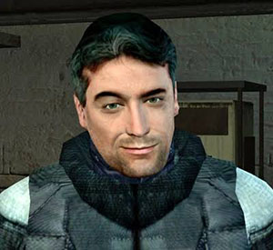
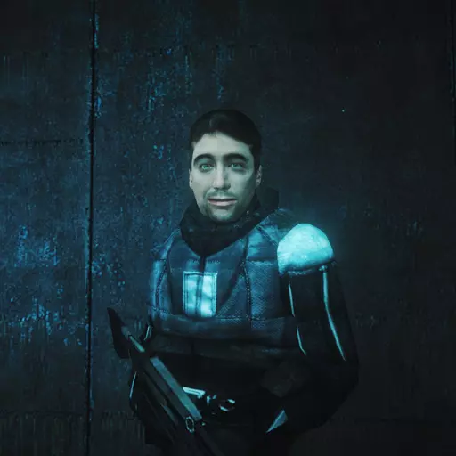
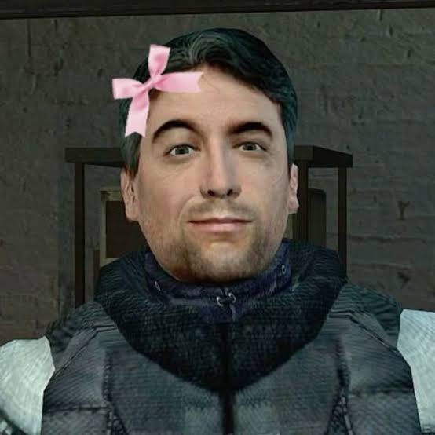
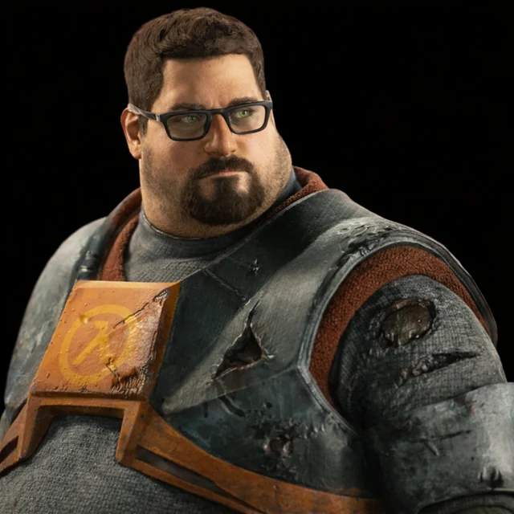
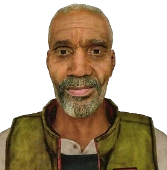
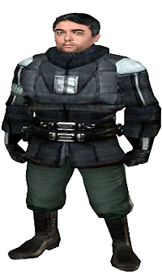

Barney Calhoun was a security guard in Black Mesa Research Facility during the 1950s and had to face an
alien attack when an experiment went array.
After such events he became a resistance leader that worked with
others to fight back against the alien takeover alongside his colleagues.

Barney is a friendly man who loves to support his friends, he's playful in grim situations, always trying to
keep things light even when they don't seem hopeful.
He's very direct when he wants to get things done, he has a sardonic pragmatism Personality and still won't
be afraid to speak his mind when he sees injustice.
Despite little training, barney is an excellent shooter with a great aim.
He's also very intelligent, knowing when a situation calls to be serious and direct, or when he can joke
around

Barney has four close colleagues:

Dr. Gordon Freeman is the pain protagonist of the half-life series. freeman is a theoretical
physicist,
forced to defend himself and the human race in a conflict against hostile aliens.
Alyx vance is the deuteragonist of Half-Life_2 and its
episodes and the titular protagonist of half-life:
Alyx.
As a young woman, she is a prominent figure in the resistance campaign against the rule of the
combine.

Dr. Eli Vance is a former Black Mesa researcher and
physicist. Decades after the Black Mesa Incident, he has
become one of the key leaders in a fight against the Combine's totalitarian rule.
He wears a prosthetic leg to replace his left leg beneath the knees. Which he lost from an an
alien
called the Bullsquid.
Dr. Isaac Kleiner is a scientist and one of the main characters of Half-Life 2 and its episodes. An
archetypical 'absent-minded genius scientist' (although somewhat more benign)
he is a prolific author of
several works on teleportation and interdimensional travel, and one of the few survivors of the incident
that took place in the Black Mesa Research Facility. Later on, he becomes a key leader of the Resistance
against the Combine, and a prime member of the Resistance science team.
this game is one of my favorites, and I've listed some of my favorite quotes:
“Now about that beer i owe ya”
“It's your pet, the frickin' head humper”
“And if you see Dr. Breen, tell him I said, "FU—-- YOU!”
